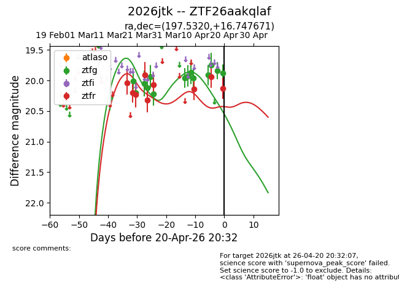
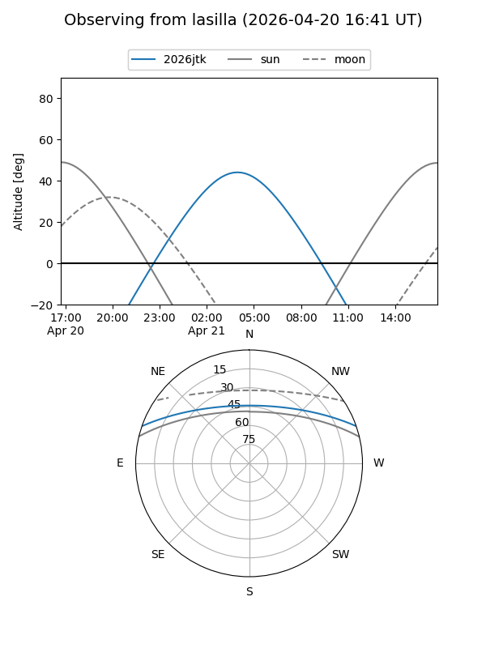
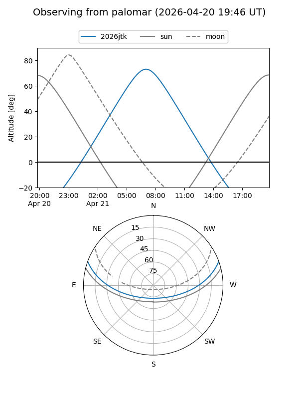
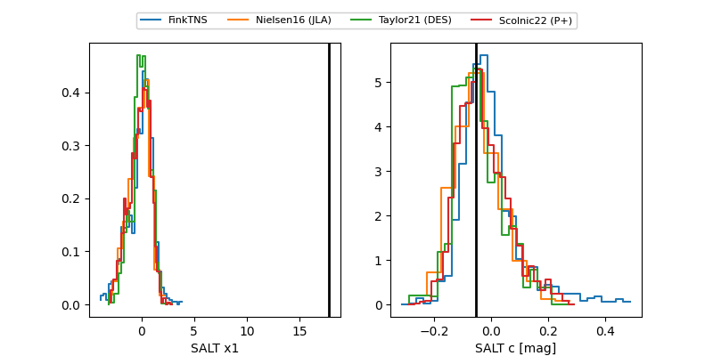

2026jtk
Target 2026jtk at 2026-04-20 20:42
Aliases and brokers:
FINK: link
Lasair: link
ALeRCE: link
TNS: link
YSE: link
alt names
ZTF26aakqlaf (ztf,fink_ztf)
2026jtk (tns,yse)
Coordinates:
equatorial (ra, dec) = 197.5320,+16.74767
equatorial (HMS+DMS) = 13:10:07.67,+16:44:51.62
galactic (l, b) = (326.5097,+78.75440)
Flags:
Photometry:
last ztfg=19.87, ztfr=20.13
15 ztfg, 9 ztfr detections
Lightcurve

Visibility


Additional plots
